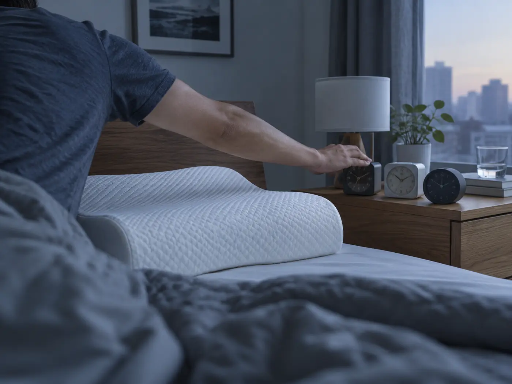
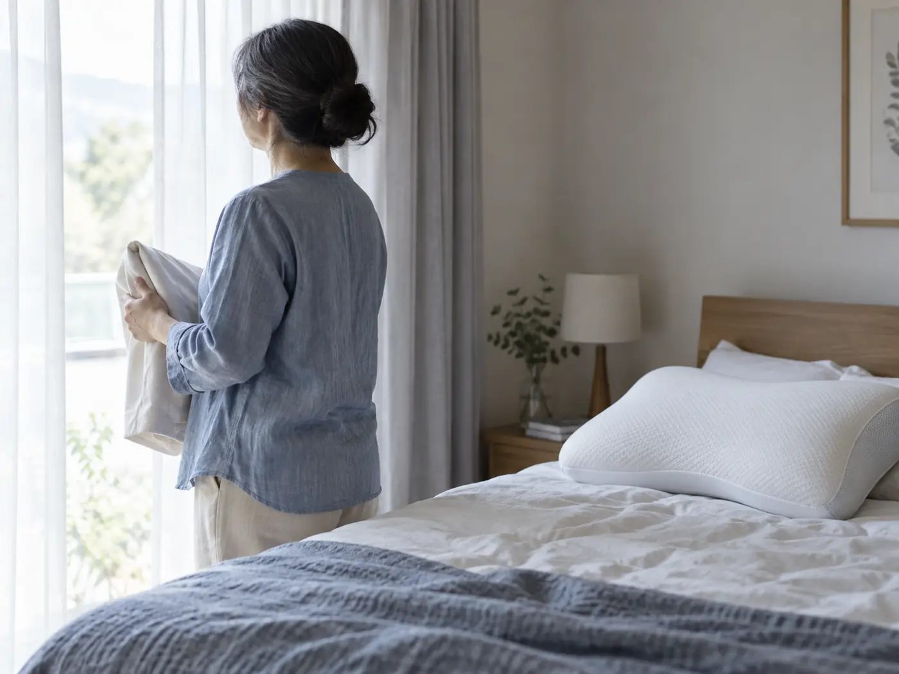

REASON 01
夢まで、わずか一瞬
姿勢を探して寝返りを打つ時間から解放。横になった瞬間から、あなたを夢の世界へ導きます。
累計体験者 25,002名が選んだ眠り
横になった、その一瞬で夢の世界へ。
独自の特殊素材から生まれた、奇跡のマクラ。
※感じ方には個人差があります。夢の内容は保証の対象外です。
FACT 01
エターナルスリープを使用した体験者のうち、98.6%が初日から「いつ眠ったのか覚えていない」と回答しました。
※2024年11月〜2026年8月 自社モニター調査。起床後に回答が確認できた方を対象。
ABOUT ETERNAL SLEEP
限られた土地でのみ採取できる特殊な素材を、独自の配合でクッション繊維へ。
まるで頭の重さそのものが消えていくような寝心地を目指しました。
TECHNOLOGY 01
柔らかいだけでは、眠りは変わりません。頭部の熱と圧力に反応し、その人に必要な沈み込みだけを残す。独自の特殊素材が、朝まで静かな姿勢を保ち続けます。
CONFIDENTIAL 素材の由来については、製法保護のためお答えしておりません。
WHY ETERNAL SLEEP
REASON 01
姿勢を探して寝返りを打つ時間から解放。横になった瞬間から、あなたを夢の世界へ導きます。
REASON 02
首の曲線に合わせて受け止める多層構造。朝まで同じ位置で、静かな眠りを支えます。
REASON 03
使うほどに馴染み、その人だけの形へ。誰かと共用せず、あなた専用としてお使いください。
※本製品は使用者ごとに形状が変化します。一度使用した製品の譲渡・共用は推奨していません。
VOICE
枕を変えただけなのに、横になった後の記憶がありません。家族によると、とても穏やかな顔で眠っていたそうです。

寝つきが悪いのが悩みでしたが、今ではベッドに入るのが楽しみです。朝まで一度も目を覚まさない日が続いています。

頭を置いた瞬間、すっと身体の力が抜けます。これを知らなかった頃の夜が、ずいぶん遠く感じられます。
※掲載内容は使用者個人の感想です。すべての方に同様の体験を保証するものではありません。
SPECIAL MONITOR
エターナルスリープは、製造できる数に限りがあります。現在、次回募集に向けて素材の確保と選定を進めています。